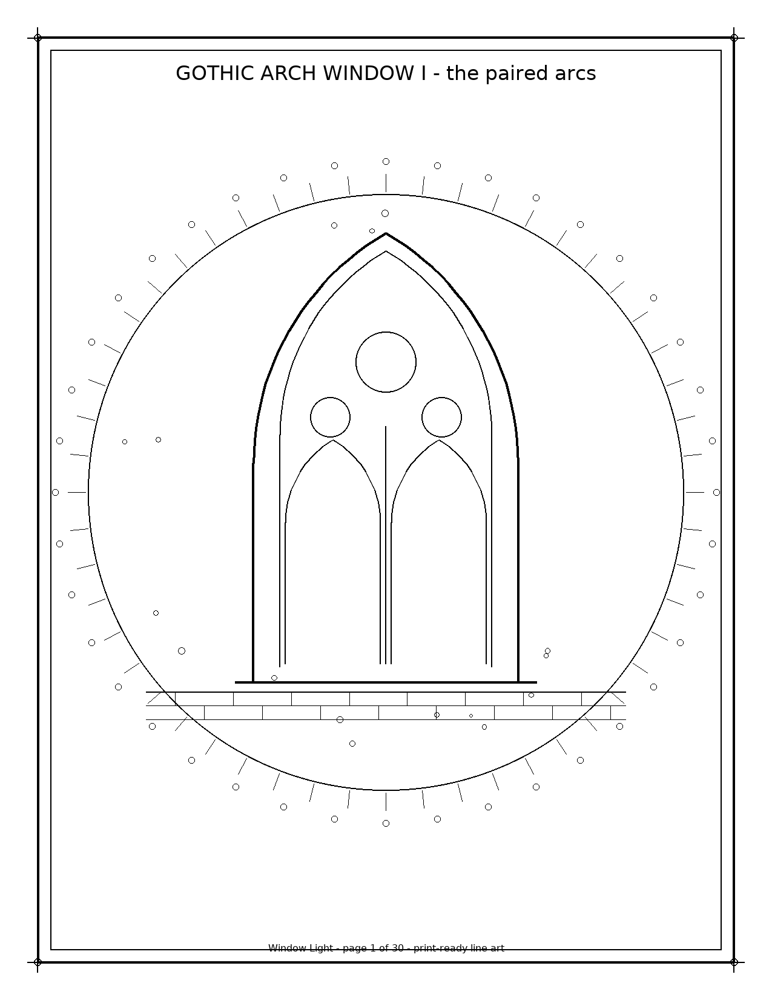
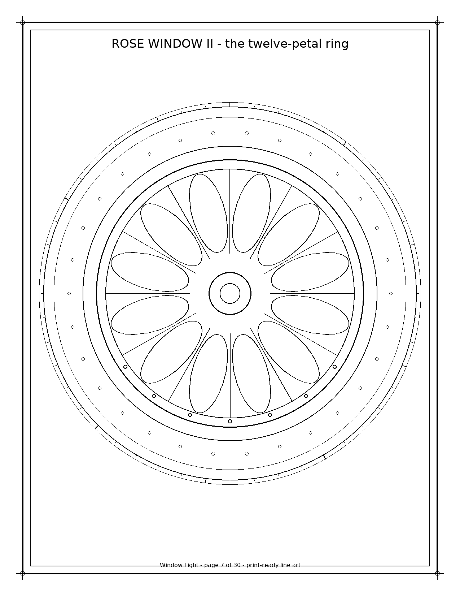
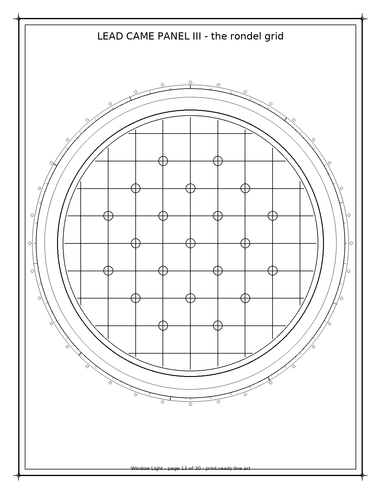
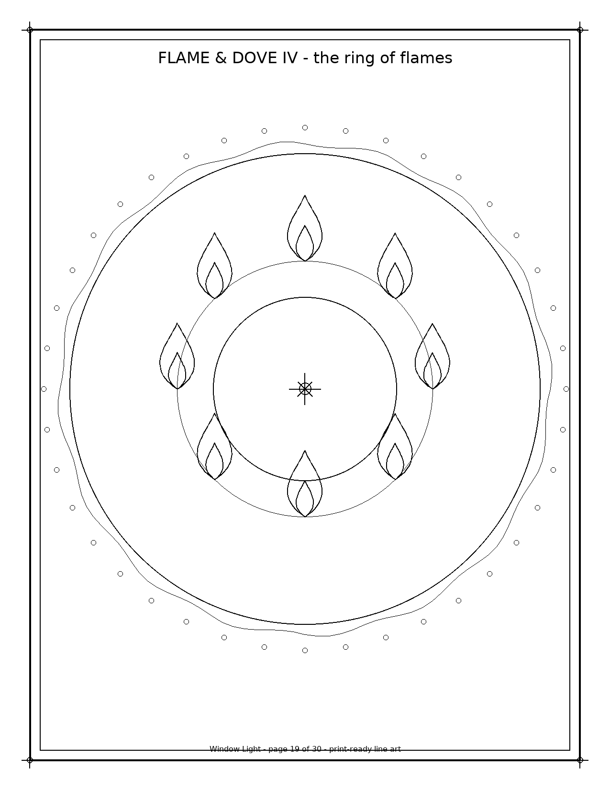
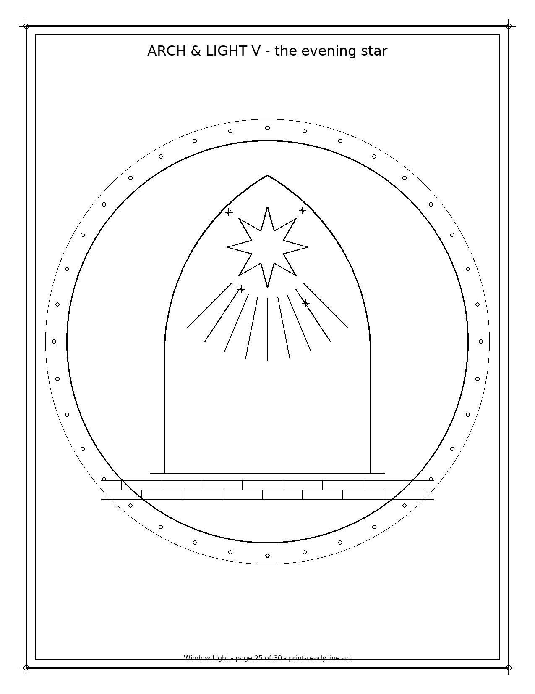
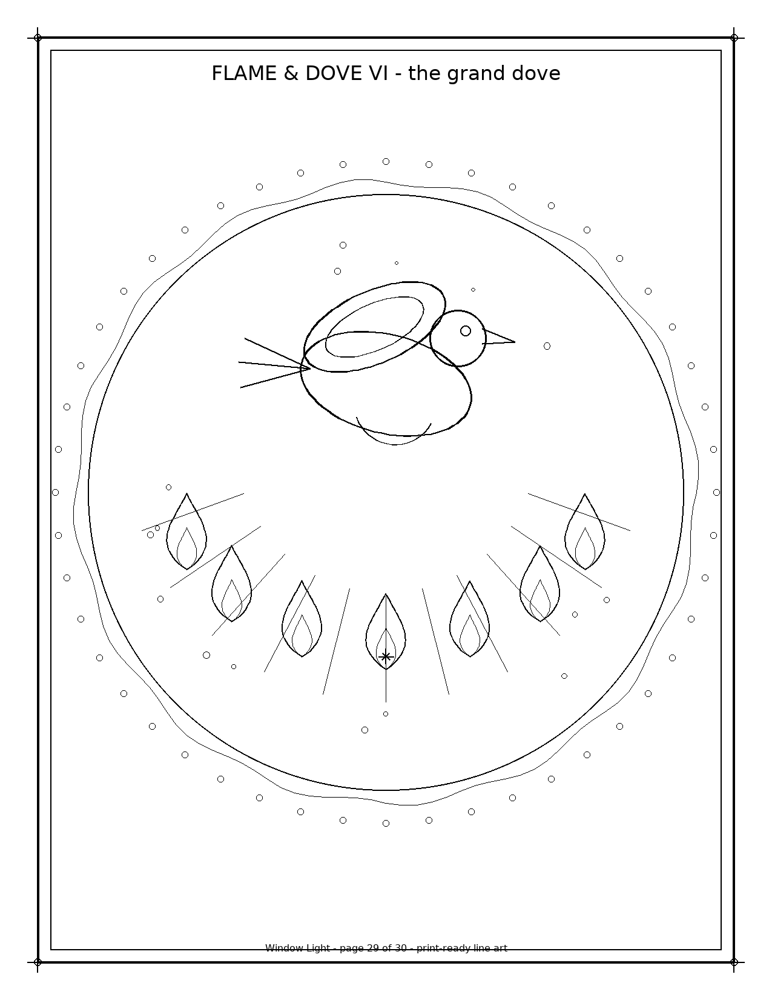

Window Light - A Stained Glass Geometry Coloring Book (Printable PDF)
Thirty original stained-glass coloring pages — gothic-arch windows, rose-window medallions, lead-came lattice panels, flame & dove line motifs, and arch-and-light scenes — as clean black vector line art. The geometry of light through old windows. Print at home, color, repeat.
// previewsActual pages, unretouched






// insideWhat's inside
Window Light is a printable coloring book of 30 original pages in five stained-glass motif families, six pages each:
- 6 gothic-arch windows — the paired arcs, the twin lancets, the triple lancet, the tall lancet, the rose-topped window, and the grand cathedral window, each built from paired equilateral arcs with trefoil tracery, sills, and stone-block walls
- 6 rose-window medallions — the eight-petal ring, the twelve-petal ring, the ringed came band, the quatrefoil heart, the spoked wheel, and the grand rose, all radial elliptical-petal geometry behind came bands
- 6 lead-came lattice panels — the diamond lattice, the honeycomb cells, the rondel grid, the triangular web, the arched lattice, and the grand medallion panel with a plain came-cross centerpiece
- 6 flame & dove line motifs — the first flame, the twin flames, the candle flame, the ring of flames, the descending dove, and the grand dove, drawn as sine-profile teardrops and simple stroke sets with ray fans
- 6 arch-and-light scenes — the morning sun, the streaming rays, the night-light window, the evening crescent, the evening star, and the grand light window
Every page is clean black outline on white — no grayscale, no shading, no pre-filled areas. Vector line art stays crisp at any home-printer resolution.
A note on tone: every design is window geometry and light — pointed arches, petal rings, lattice cames, flames, a dove, suns and stars. No saints, no scenes, no text, no denominational symbols — respectful and welcoming to colorists of any tradition or none.
You get
- 1 PDF, 30 pages, US Letter (8.5 × 11 in), print-safe margins
- Print as many copies as you like for personal use
- Instant digital download — no physical item ships
Good for
- Relaxation and focus coloring, fellowship and craft tables, homeschool art and architecture units, stained-glass fans, mindfulness practice, journal and planner pages
Details
- Difficulty: mixed — bold arch windows and flame motifs for quick sessions, dense rose windows and lattice panels for slow ones
- Works with markers, colored pencils, or fine liners (line weights vary by design layer); translucent gel pens echo the glass
- No people, no text, no copyrighted characters in this pack — this one is the geometry of light through old windows; creature, botanical, and ocean themes are their own packs
AI disclosure: This product was created with AI-assisted generative design tools (procedural geometry rendered to vector line art) under the seller's creative direction, and is disclosed as such in accordance with Etsy's Creativity Standards. Each page was programmatically verified and visually reviewed before listing.
License: personal use. Print copies for yourself and your household; please don't resell or redistribute the files.
Details & license
- Pages
- 30
- Page Mix
- 5 stained-glass motif families x 6 pages: gothic-arch windows (paired-arc lancets, trefoil tracery, stone-block walls), rose-window medallions (petal rings, quatrefoil heart, spoked wheel), lead-came lattice panels (diamond, honeycomb, rondel grid, triangular web, arched lattice), flame & dove line motifs (flames, candle, flame ring, descending dove), arch-and-light scenes (morning sun, streaming rays, night-light, evening crescent, evening star)
- Page Size
- US Letter (612x792 pt / 8.5x11 in)
- Art
- generative black vector line art on white (reportlab): gothic arches as paired equilateral two-centered arcs with trefoil tracery, sills and coursed stone blocks, rose windows as radial rings of rotated elliptical petals behind came-band circles with spoke lines and ringed hubs, quatrefoil and spoked-wheel variants, lead-came lattices as parallel line families clipped to circles (diamond 45/135, honeycomb hexagon tiling, rondel grid with alternating bullseye circles, triangular 0/60/120 web) plus a grid clipped to an arched-top interior, flames as mirrored sine-profile teardrop curves, candles with dish holders, doves as ellipse+arc stroke sets, a plain came cross of two closed rectangles, sun/crescent/star light sources with ray fans, seeded light-mote scatters - respectful and denominational-neutral by construction: no saints, no crucifixion imagery, no denominational symbols, no text; no glyphs, no knotwork, no circle lattices or chord webs, no orbit rings or starbursts, no cat silhouettes, no herb wreaths, no waves, shells or lighthouses, no mushrooms, ferns or forest-floor scenes (distinct visual language from all prior packs)
- Verified
- pypdf: 30 pages, uniform 612x792 Letter mediabox, 30 unique page content streams (sha256); 6 preview pages rendered from the same drawing code (pages 1, 7, 13, 19, 25, 29) for visual inspection
- License
- Personal use. Please don't resell or redistribute the files.